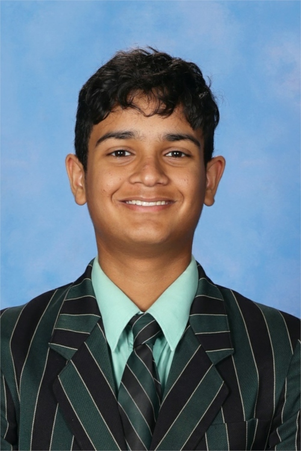
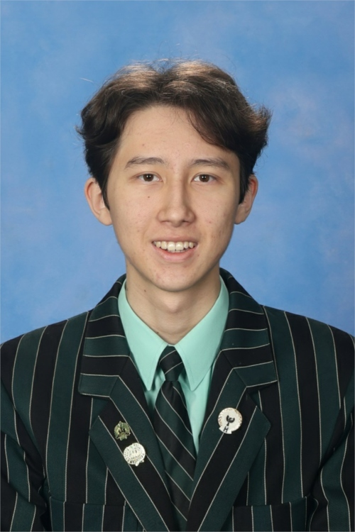
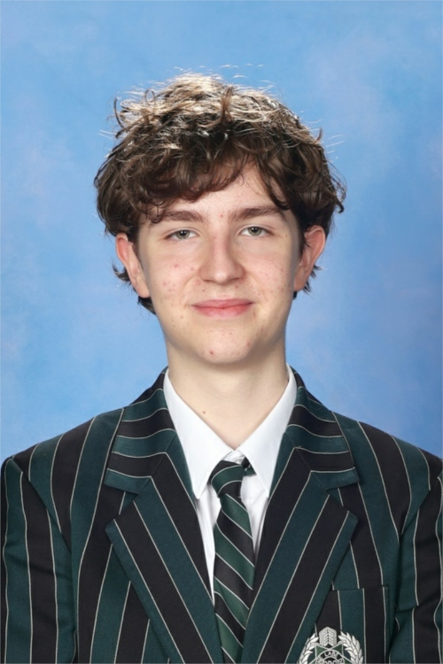
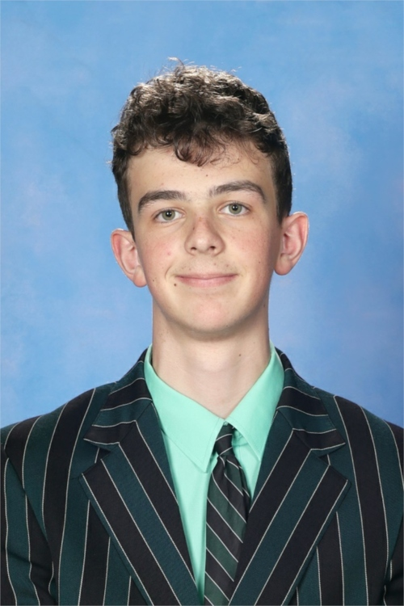

Brisbane Boys' College
THE CREW
Four students. One mission.
Brisbane Boys' College
Four students. One mission.

Sam began his robotics journey in 2018. Over the years, he has developed proficiency in a wide range of programming languages, including EV3 and Spike block coding, EV3 MicroPython, Spike Python, RobotC, and C++ within the Arduino framework. His passion and dedication to robotics have been demonstrated through consistent participation in RoboCup Junior Australia (RCJA) competitions. Notable achievements include placing 4th in both Queensland State and National OnStage (2021), 2nd at State and 6th nationally in the Standard Soccer League (2023), and 3rd at State and 2nd nationally in the Lightweight Soccer League (2024). In 2025, as member of Team Hyperion, Sam helped the team to a great season, achieving 2nd place at the Queensland State Competition, 1st place at the National Lightweight Soccer League, and representing Australia at the RoboCup Junior International Competition in Salvador, where the team placed 14th individually and 1st in the Lightweight Soccer SuperTeam. These results highlight Sam's leadership, technical innovation, and ongoing commitment to excellence in robotics.

Matthew's robotics journey began in 2018. He quickly developed foundational skills in basic coding and problem-solving using LEGO EV3 and NXT, which soon expanded to include CAD design and modelling, as well as the ability to read electrical schematics and design and solder PCBs while understanding their functionality. His dedication to robotics is reflected in his continuous learning and commitment. Matthew has actively participated in numerous RoboCup Junior Australia (RCJA) competitions, achieving outstanding results including 4th place in both State and National OnStage (2021), 3rd in the Lightweight Soccer division at States (2024), and 2nd nationally that same year. In 2025, as a member of Team Hyperion, he helped secure 2nd place at the Queensland State Competition, 1st place nationally, and an exceptional performance at the RoboCup Junior International Competition in Salvador, achieving 14th place individually and 1st place in the Lightweight Soccer SuperTeam division. These accomplishments reflect Matthew's expertise, leadership, and continued drive for excellence within the robotics community.

Luke began his robotics journey in 2019, initially exploring foundational coding and LEGO EV3 robotics. His skills soon broadened to include CAD design, 3D modelling, soldering, and hands-on hardware construction. Over the years, Luke has remained a dedicated and consistent presence in the RoboCup Junior Australia (RCJA) community, competing across multiple disciplines. His past achievements include 2nd place in the Open Line Rescue division at the 2022 State competition, 5th nationally that same year, 2nd at States and 6th nationally in the Standard Soccer League in 2023, and 3rd at States and 2nd nationally in Lightweight Soccer in 2024. In 2025, as a key member of Team Hyperion, Luke contributed to the team's 2nd place finish at the Queensland State Competition, 1st place nationally, and 1st place in the International Lightweight Soccer SuperTeam at RoboCup Junior International in Salvador, alongside a 14th place individual ranking. These achievements showcase Luke's technical expertise, collaboration, and determination to succeed at the highest level.

Thomas began his robotics journey in 2019, quickly developing a strong foundation across multiple platforms and programming environments. He has gained proficiency in languages such as Spike Block, EV3 Block, Spike MicroPython, EV3 MicroPython, and RobotC. Thomas has demonstrated consistent commitment to the field through years of participation in RoboCup Junior Australia (RCJA) competitions. His notable achievements include competing in the RCJA OnStage Challenge (2021), advancing through Secondary Rescue (2022–2023), and achieving 3rd place in the State Soccer Standard League (2024). In 2025, as part of Team Hyperion, Thomas contributed to the team's 2nd place finish at the Queensland State Competition, 1st place at Nationals, and exceptional international success at RoboCup Junior in Salvador, Brazil, where the team placed 14th individually and 1st in the Lightweight Soccer SuperTeam. These achievements underscore Thomas's technical growth, perseverance, and enthusiasm for robotics.